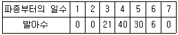
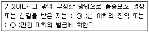

종자기사 (2012-05-20 기출문제)
1과목: 종자생산학
1. 종자처리에 대한 설명 중 옳지 않은 것은?
- 필름코팅처리(film coating)는 수용성 중합체를 이용하며 색소나 살균제 등을 같이 처리하는 것이다.
- 종자단립처리(seed pelleting)는 형태가 불균일한 종자에 물질을 덧붙여 기계파종을 용이하게 한다.
- 종자피복처리(seed encrustment)는 종자에서 단립처리(seed pelleting)보다 크기가 더 크다.
- 필름코팅은 종자에 따라서 과다한 초기수분 흡수를 억제하여 병 발생을 감소시키기도 한다.
(정답률: 58%)

2. 배(胚)의 발생법칙이 아닌 것은?
- 질량의 법칙
- 절약의 법칙
- 기원의 법칙
- 수의 법칙
(정답률: 70%)
3. 채종에 관한 설명 중 옳지 않은 것은?
- 벼 종자는 평야지보다 분지에서 생산된 것이 임실이 좋아서 종자가치가 높다.
- 평지(유채)에서는 가을재배를 하면 퇴화를 경감할 수 있다.
- 씨감자의 퇴화를 방지하려면 고랭지에서 생산해야 한다.
- 콩은 따뜻한 남부에서 생산된 종자가 서늘한 지역에서 생산된 것보다 충실하다.
(정답률: 70%)
4. 종자의 표준발아 검사에 쓰이는 종자시료를 바르게 설명한 것은?
- 제출시료에서 무작위로 추출하여 사용한다.
- 제출시료에서 육안으로 보아 건전한 종자를 골라서 사용한다.
- 순도검사를 마친 정립을 대상으로 한다.
- 순도검사 후 이물(異物)을 제외하고 나머지 종자를 혼합하여 사용한다.
(정답률: 66%)
5. 겉씨(裸子)식물에서 수정 후 종자의 핵상으로 옳은 것은?
- 종피 : 2n, 배유 : 3n, 배 : 2n
- 종피 : 3n, 배유 : 3n, 배 : 2n
- 종피 : 2n, 배유 : 2n, 배 : 3n
- 종피 : 2n, 배유 : 1n, 배 : 2n
(정답률: 67%)
6. 발아세의 뜻은 무엇인가?
- 파종된 총 종자개체수에 대한 발아종자 개체수의 비율
- 파종기부터 발아기까지의 일수 콩
- 치상 후 일정한 시일 내의 발아율
- 종자의 대부분이 발아한 날
(정답률: 79%)
7. 종자 순도분석 검사시료(또는 반량시료)의 중량이 1g 이상~10g 미만일 때 충중량 및 구성요소 중량의 칭량시 소수점 이하 자리수는 얼마인가?
- 한 자리
- 두 자리
- 세 자리
- 네 자리
(정답률: 56%)
8. 작물의 화아분화를 촉진하는데 가장 영향력이 큰 것은?
- 온도, 수분
- 수분, 질소
- 일장, 수분
- 온도, 일장
(정답률: 86%)
9. 감자의 휴면타파법이 되지 못하는 것은?
- 박피절단법
- Maleic Hydrazide(MH) 처리
- ethylene chlorohydrin 처리
- 지베렐린 처리
(정답률: 67%)
10. 종자의 발아과정에서 유근(幼根, 어린뿌리)은 어떤 경로를 거쳐 출현하는가?
- 배유합성, 광합성 개시
- 광합성 개시, 세포신장
- 세포신장, 세포분열
- 세포분열, 광합성 개시
(정답률: 78%)
11. 1개의 화분모세포에서는 몇 개의 화분(소포자)이 생기는가?
- 1개
- 2개
- 4개
- 8개
(정답률: 84%)
12. 잡종강세로 원인을 핵 내 유전자의 작용에 있다고 보는 내용과 관련이 없는 것은?
- 비대립 유전자 간의 상호작용
- 대립유전자 간의 상호작용
- 세포질과 핵 내 유전자의 상호작용
- 부분형질 간의 상호작용
(정답률: 36%)
13. 과실이 영(穎)에 싸여 있는 것은?
- 밀
- 옥수수
- 귀리
- 시금치
(정답률: 70%)
14. 종자건조에 대한 설명 중 간접열에 의한 건조방법에 해당 하는 것은?
- 건조속도가 느려 수 주일이 소요된다.
- 자연상태의 공기를 이용한 건조방법이다.
- 시설비가 적게 들고 연료비가 들지 않는다.
- 종자더미에 수분이 응결될 위험성이 있다.
(정답률: 57%)
15. 종자의 건열처리(乾熱處理)에 대한 설명으로 옳지 않은 것은?
- 진균류를 구제할 수 있다.
- 처리된 종자의 저장력이 저하된다.
- 처리시 종자수분 함량이 높아야 한다.
- 바이러스(CGMMV 등)를 불활성화 시킬 수 있다.
(정답률: 49%)
16. 다음 중 종자의 퇴화에 관한 설명 중 틀린 것은?
- 종자의 저장관리를 잘하면 퇴화의 속도를 어느 정도 줄일 수 있다.
- 퇴화된 종자라도 인위적인 처리로 다시 건전한 종자로 만들 수 있다.
- 같은 품종 중에서도 수확한 장소에 따라 저장성이 다를 수 있다.
- 한 개체에서 수확한 종자라도 개개 종자에 따라 저장력이 다를 수 있다.
(정답률: 94%)
17. 표준종자의 순도검사에 대한 설명으로 잘못된 것은?
- 표본종자의 구성내용을 합계한 중량의 백분율로 구한다.
- 다른 종자와 이물을 동정하는 검사이다.
- 순도의 검사뿐만 아니라 발아 능력의 평가도 포함한다.
- 순수종자는 해당작물의 고유 특성을 지닌 종자로 미숙립, 주름진립, 소형립 등이 포함된다.
(정답률: 75%)
18. 인공교배시 양친의 개화기를 일치시키기 위해서 취하는 방법만 모아 놓은 것은?
- 춘화처리, 큐어링
- 큐어링, 프라이밍
- 프라이밍, 일장처리
- 일장처리, 춘화처리
(정답률: 71%)
19. 잡종(F1)종자를 적은 비용으로 대량생산하기 위해서 널리 사용하고 있는 방법만으로 되어 있는 것은?
- 자가불화합성 이용, 이면교배법 이용
- 이면교배법 이용, 고온춘화성 이용
- 고온춘화성 이용, 웅성불임성 이용
- 웅성불임성 이용, 자가불화합성 이용
(정답률: 97%)
20. 곡물과 상추 종자에서 단백질을 다량 함유하고 발아기간 동안 배유를 분해하는 효소를 합성하는 곳은?
- 중배축
- 호분층
- 종피
- 과피
(정답률: 91%)
2과목: 식물육종학
21. 원연간 교배에서 수정된 배주를 퇴화하기 전 태좌에 붙인 채로 기내 배지에서 배양하거나 수정된 배주를 태좌로부터 분리 배양하여 식물체를 얻는 방법은?
- 배배양
- 배주배양
- 자방배양
- 경정배양
(정답률: 62%)
22. 영양번식을 하는 작물의 신품종 육성에 관한 기술 중 가장 옳은 것은?
- 한번 만들기만 하면 고정할 필요가 없다.
- 고정시킨 다음에 신품종이 된다.
- 계속해서 선발하여야 균일하다.
- 종자식물 번식과 마찬가지로 한다.
(정답률: 68%)
23. 계통육종의 육종과정 중 지역적응성 검정시험에서 적응성을 평가받게 될 계통은?
- 생산력검정 본 시험에서 표준품종보다 우수한 특성을 가진 것으로 평가된 계통
- 농가실증 시험에서 현 재배품종과 비슷한 특성을 가졌다고 평가된 계통
- 생산력 검정 예비시험 1년차 평가에서 표준품종보다 우수하다고 평가된 계통
- 3세대 동안 집단재배와 집단선발을 통해서 선발된 유전분리 된 혼합계통
(정답률: 67%)
24. 동질배수체의 작성에 관련된 내용 중 옳지 않은 것은?
- 일반적으로 콜히친을 이용하여 배수체를 작성한다.
- 식물체에 콜히친을 처리하면 키메라 현상이 나타난다.
- 인위배수체는 임성이 높아서 종자도 크다.
- 콜히친은 분열하지 않는 세포에서는 염색체 수를 배가 시키지 못한다.
(정답률: 75%)
25. 유전력에 대한 설명이 옳은 것은?
- 유전력이 낮을수록 유전자형의 효과가 크다.
- 유전력이 높을수록 선발효율이 떨어진다.
- 같은 형질이라도 집단과 환경에 따라 유전력에 차이가 있다.
- 상가적 유전분산이 낮을수록 좁은 의미의 유전력이 높아진다.
(정답률: 80%)
26. 유전력이 높은 형질에 대한 분리세대에서의 선발에 관한 설명 중 옳지 않은 것은?
- 조기세대에서 선발을 시작할 수 있다.
- 개체 선발의 효과가 크다.
- 선발의 강도를 높일 수 있다.
- 환경의 영향을 크게 받는다.
(정답률: 70%)
27. 동질배수체의 일반적인 특성으로 알맞지 않은 것은?
- 영양기관의 생육증진
- 저항성의 증대
- 개화기 촉진
- 핵과 세포의 거대성
(정답률: 44%)
28. 다음 중 신품종의 퇴화 요인으로 가장 거리가 먼 것은?
- 돌연변이
- 기계적 혼입
- 유전자의 분리
- 자가불화합
(정답률: 57%)
29. 종속간 교잡을 하면 수정이 되더라도 배가 완전 발육을 못하고 중도에서 정지되거나 또는 배유의 발육불량으로 종자가 발아하지 못한다. 이러한 경우 잡종을 얻을 수 있는 방법은?
- 배배양
- 배주배양
- 자방배양
- 경정배양
(정답률: 51%)
30. 다음 중 그 성격상 연속변이에 가장 가까운 것은?
- 질적변이
- 양적변이
- 대립변이
- 꽃색변이
(정답률: 75%)
31. 유전자원 중 장기보존하는 종자(base collection)의 저장조건은?
- 종자수분을 10-15%로 한 후 4℃ 저온에 저장
- 종자수분을 10-15%로 한 후 –18℃ 저온에 저장
- 종자수분을 5-7%로 한 후 4℃ 저온에 저장
- 종자수분을 5-7%로 한 후 -18℃ 저온에 저장
(정답률: 59%)
32. 양적형질을 개량하고자 할 때 그 형질의 유전력을 알고 있는 것은 육종상 매우 중요하다. 어떤 형질의 표현형 분산이 50이고 유전분산이 30일 때의 유전력은 얼마인가?
- 37.5%
- 60%
- 80.7%
- 150%
(정답률: 74%)
33. 자연교잡에 의한 품종퇴화를 방지하기 위하여 어떤 조치가 필요한가?
- 격리재배
- 계통재배
- 원원종재배
- 촉성재배
(정답률: 86%)
34. 몇 개의 품종 또는 계통을 tester로 준비하여 검정하려는 계통 모두와 교잡하여 F1을 만들어 검정하는 방법을 무엇이라 하는가?
- 단교잡검정법
- 톱교잡검정법
- 다교잡검정법
- 3면교배검정법
(정답률: 62%)
35. 단립계통육종(single seed descent breeding)과정의 F5 각 계통에 대한 내용 중 맞는 것은?
- F5 각 계통은 F1에서 선발된 개체의 1립에서 유래한 것이다.
- F5 각 계통은 F2 각 개체의 1립에서 유래한 것이다.
- F5 각 계통은 F2 종자를 일정비율로 혼합하여 파종한 F3 각 개체의 1립에서 유래한 것이다.
- F5 각 계통은 교배모본의 1립에서 유래한 것이다.
(정답률: 38%)
36. 종자산업법상 새로운 품종이 갖추어야 할 조건이 아닌 것은?
- 신규성
- 구별성
- 균일성
- 저항성
(정답률: 88%)
37. 춘화처리의 설명으로 옳은 것은?
- 개화를 촉진하기 위하여 일정기간 저온처리만 하는 것 이다.
- 개화를 촉진하기 위하여 일정기간 저온처리를 하는 작물도 있고, 고온처리 할 수도 있다.
- 화훼류에 대하여는 저온처리를 하고, 채소류에 대해서는 고온처리를 한다.
- 춘화처리는 종자에 하고, 어린 식물에는 장일 처리만 한다.
(정답률: 72%)
38. 내병성, 내한성을 검정하기 위하여 필요한 조치는?
- 작물재배의 최적 조건을 조성한다.
- 이상환경과 특수한 환경을 조성한다.
- 작물 재배관리를 철저히 한다.
- 촉성재배나 억제재배를 한다.
(정답률: 75%)
39. 인위적으로 단위결과를 유도할 수 있는 방법만으로 나열된 것은?
- 꽃가루의 자극이용, 배수성 이용
- 배수성 이용, 중복수정 이용
- 중복수정 이용, 꽃가루배양 이용
- 교잡이용, 꽃가루의 자극 이용
(정답률: 56%)
40. 다음 중 자식성 작물은?
- 수박
- 콩
- 옥수수
- 메밀
(정답률: 69%)
3과목: 재배원론
41. 작물의 습해(濕害)에 대한 설명으로 옳은 것은?
- 뿌리조직이 목화(木化)하면 습해에 약해진다.
- 부정근(不定根)의 발생력이 크면 습해에 약하다.
- 잎이 지하의 줄기에 착생하면 내습성이 커진다.
- 습해발생시 비료는 심층시비 하는 것이 좋다.
(정답률: 50%)
42. 다음 중 작물과 저항성의 연결이 알맞은 것은?
- 밭벼 - 내건성 작물
- 수수 - 내습성 작물
- 감자 - 내산성 작물
- 고구마 - 내염성 작물
(정답률: 53%)
43. 토양의 대소 공극이 고루 섞여 작물생육에 가장 알맞은 토양구조는?
- 입단(粒團)구조
- 이상(泥狀)구조
- 단립(單粒)구조
- 사양토
(정답률: 86%)
44. 논에 암모니아태질소를 시용하여 질화작용이 발생하는 경우에 대한 설명으로 옳은 것은?
- 탈질작용과 관계가 없다.
- 암모니아화성균에 의해서 일어나다.
- 질산태 질소는 토양교질에 흡착되지 않는다.
- 암모니아태 질소를 환원층에 시용시 일어난다.
(정답률: 35%)
45. 기원지가 지중해 연안인 작물로 짝지어진 것은?
- 배추, 콩, 자운영
- 양배추, 상추, 티머시
- 고추, 토마토, 땅콩
- 수박, 참외, 수수
(정답률: 74%)
46. 작물의 초형(Plant type)과 군략의 수광상태를 개선하기 위한 재배적 방안으로 적합하지 않는 것은?
- 벼에서 규산과 칼리를 충분히 시용하여 잎을 직립으로 만든다.
- 맥류에서 드릴파 재배보다 광파 재배를 하는 것이 수광 태세가 좋아지고 지면증발량도 적어진다.
- 재식밀도와 비배관리는 초형과 수광 태세에 영향을 미치므로 적절히 관리한다.
- 벼와 콩에서 밀식을 할 때에는 줄사이를 넗히고, 포기사이를 좁게 한다.
(정답률: 55%)
47. 작물품종의 도복저항성에 대한 설명 중에서 잘못된 것은?
- 도복지수는 간장, 수중, 줄기의 강도로 계산한다.
- 도복지수를 낮추기 위하여 좌절중을 작게 해야 한다.
- 도복지수가 작은 품종은 내도복성이 크다.
- 도복지수를 낮추기 위하여 무조건 단간종을 육성하면 기계수확이 곤란해진다.
(정답률: 50%)
48. 육묘 중 상토의 EC가 낮게 나타날 때의 원인이나 대책이 아닌 것은?
- 원인 - 관수량이 적어 식물체의 무기염 흡수가 많아질 때
- 원인 - 시비량이 지나치게 부족할 때
- 대책 - 시비량을 늘린다.
- 대책 - 시비 횟수를 늘린다.
(정답률: 67%)
49. 작물의 개화기 조절과 관계가 먼 것은?
- 일장효과
- 버널리제이션
- 감온성
- T/R율
(정답률: 77%)
50. 지온상승에 가장 효과가 큰 광 파장은?
- 300 ~ 400nm
- 400 ~ 500nm
- 500 ~ 600nm
- 770nm
(정답률: 62%)
51. 도복의 유발조건을 바르게 설명한 것은?
- 키가 작은 품종은 대가 튼튼해도 도복이 심하다.
- 칼륨, 규산이 부족하면 도복이 유발된다.
- 토양환경과 도복은 상관이 없다.
- 밀식은 도복을 적게 한다.
(정답률: 70%)
52. 다음과 같은 종자 발아조사에서 발아속도의 값은?

- 3.5
- 16.2
- 24.0
- 97.0
(정답률: 67%)
53. 수분이 부족할 때 내건성을 증대시키는 식물호르몬은?
- Auxin
- gibberellin
- cytokinin
- abscissic acid
(정답률: 56%)
54. 지베렐린의 재배적 이용과 관계가 먼 것은?
- 발아촉진
- 화성의 유도
- 경영의 신장촉진
- 과실의 후숙촉진
(정답률: 63%)
55. 벼의 냉해를 줄이기 위한 방법은?
- 질소비료 증시, 물떼기
- 만기재배, 만식재배
- 다주밀식, 중간낙수
- 심수관개, 보온육묘
(정답률: 69%)
56. 밀의 일장 감응형은?
- LL식물
- II식물
- IL식물
- SI식물
(정답률: 61%)
57. 다음 중 배유종자로만 나열된 것은?
- 콩, 땅콩, 보리
- 벼, 보리, 옥수수
- 벼, 보리, 팥
- 옥수수, 콩, 팥
(정답률: 68%)
58. 동ㆍ상해의 피해를 줄이기 위한 응급대책이 아닌 것은?
- 연소법
- 피복법
- 살수빙결법
- 경화법
(정답률: 40%)
59. 저위도 지방에서 가장 다수성을 가져올 수 있는 기상생태형은?
- 감온형
- 감광형
- 기본영양생장형
- 세 기상상태 모두 안된다.
(정답률: 65%)
60. 파종기를 결정하는 요인을 잘못 설명한 것은?
- 맥류에서 추파성 정도가 높은 품종은 만파하는 것이 좋다.
- 감자는 평지에서 이른 봄에 파종되나 고랭지에서는 늦봄에 파종된다.
- 봄채소는 조파하는 것이 한해가 경감된다.
- 출하기를 조절하기 위해 촉성재배나 억제재배를 한다.
(정답률: 54%)
4과목: 식물보호학
61. 해충과 동일한 종의 곤충을 이용하여 해충을 방제하는 방법은?
- 천적의 이용
- 불임해충의 이용
- 호르몬의 이용
- Pheromne의 이용
(정답률: 44%)
62. 다음 중 곤충의 소화기관이 아닌 것은?
- 소낭
- 발효실
- 기낭
- 중장
(정답률: 71%)
63. 파밀라(papilla) 돌기물이 나타나 병원균 침입에 저항하는 저항성 기구는?
- 동적 저항성
- 화학적 저항성
- 수직 저항성
- phtoalexin
(정답률: 56%)
64. 해충의 가해양식을 설명한 것으로 옳지 않은 것은?
- 풍뎅이류는 씹기에 알맞은 입을 가져 가해한다.
- 딸기잎벌레는 주둥이가 주사 바늘처럼 생겨 흡즙한다.
- 하늘소류는 산란할 때 피해를 준다.
- 진딧물은 식물병을 매개하여 피해를 준다.
(정답률: 59%)
65. 곤충에서 앞창자신경계와 협동하여 변태호르몬을 분비하며, 머릿속에 있는 한 쌍의 신경구 모양의 조직은?
- 지방체
- 알라타체
- 편모세포
- 진피세포
(정답률: 82%)
66. 다음 중 불완전변태(不完全變態)를 하는 해충은?
- 노린재목 해충
- 딱정벌레목 해충
- 나비목 해충
- 파리목 해충
(정답률: 68%)
67. 원시적인 곤충으로서 날개가 없고 일반적으로 무변태인 곤충목은?
- 톡토기목
- 갈로와벌레목
- 강도래목
- 메뚜기목
(정답률: 80%)
68. 식물병원 바이러스(virus)의 설명으로 옳지 않은 것은?
- 단백질로 된 외피를 가지고 있다.
- 핵산으로 구성되어 있다.
- 인공배지에서 증식이 가능하다.
- 생물에 기생하며 병을 일으킨다.
(정답률: 79%)
69. 매미목에 속하지 않는 곤충은?
- 말매미
- 벼멸구
- 조팝나무진딧물
- 청실잠자리
(정답률: 74%)
70. 유시충이 나타난 최초의 시기는?
- 트라이이스기
- 데본기
- 석탄기
- 캄브리아기
(정답률: 58%)
71. 곤충이 지구상에 번성하게 된 원인 중 그 내용이 옳지 않은 것은?
- 날개의 발달
- 완전변태를 함
- 외골격이 퇴화하여 수분 손실 억제
- 몸의 구조적 적응력이 발달
(정답률: 57%)
72. 합성 페로몬을 이용한 해충방제에 있어서 고려해야 할 사항은?
- 환경에 대한 오영
- 저항성 또는 내성 개체 출현
- 천적 및 인축에 대한 독성
- 식물에 대한 약해
(정답률: 59%)
73. 성충과 약충이 작물을 가해하고, 벼의 오갈병을 매개하는 해충은?
- 벼멸구
- 애멸구
- 끝동매미충
- 흰등멸구
(정답률: 53%)
74. 작물별 잡초방제 한계기간이 가장 긴 것은? (단, 파종 후 일수를 기준으로 한다.)
- 양파
- 수도(직파)
- 콩
- 옥수수
(정답률: 45%)
75. 곤충 소화관 가운데 중장과 후장의 경계부위에 개구되어 노페물을 장속으로 배설하는 기관은?
- 침샘
- 횡연합기관간
- 배혈관
- 말피기관
(정답률: 73%)
76. 생물적 방제가 아닌 것은?
- BT균을 이용하여 솔나방을 방제한다.
- 트랩을 설치하여 바퀴를 방제한다.
- 거미를 이용하여 벼멸구를 방제한다.
- 먹좀벌을 이용하여 솔잎혹파리를 방제한다.
(정답률: 78%)
77. 곤충의 고유종이란?
- 특정한 장소 및 지역에 한정되어 살고 있는 종
- 세계 각지에 분포되어 있고, 그 환경에 알맞게 적응한 종
- 현재에는 멸종되었으나 과거에는 생존하였던 종
- 어느 특정인이 소유하고 있는 종
(정답률: 79%)
78. 다음 중 식물의 즙액을 빨아먹는 해충은?
- 벼잎벌레
- 심식충
- 가루깍지벌레
- 배추흰나비
(정답률: 58%)
79. 곤충의 형태를 설명한 것으로 옳지 않은 것은?
- 머리는 겹눈, 홑눈, 더듬이, 입틀로 이루어진다.
- 유시충은 앞가습과 뒷가슴에 각각 한 쌍의 날개를 갖는다.
- 배는 대개는 10~11마디이고, 마지막 몇 마디에 생식기가 있다.
- 표피의 주성분은 키틴(chitin)질이다.
(정답률: 57%)
80. 곤충의 복부에 있는 기관이 아닌 것은?
- 기문
- 항문
- 생식기
- 날개
(정답률: 59%)
5과목: 종자관련법규
81. 종자보증을 위한 포장검사에 대한 설명 중 맞는 것은?
- 채종단계별 포장검사의 기준, 방법, 절차 등에 관한 사항은 농림수산식품부령으로 정한다.
- 국가보증이나 자체보증을 받는 종자를 생산하려는 자는 농촌진흥청장으로부터 3회 이상 포장검사를 받아야 한다.
- 재검사를 받으려는 자는 종자검사 결과를 통지받은 다음 날로부터 15일 이내에 신청서에 종자검사 결과통지서를 첨부하여 검사기관의 장 또는 종자관리사에게 제출하여야 한다.
- 재검사 신청을 받은 검정기관의 장은 그 신청서를 받은 날부터 30일 이내에 재검사를 실시하여야 한다.
(정답률: 32%)
82. 종자산업법상의 심판과 관련된 설명으로 틀린 것은?
- 심판위원은 직무상 독립하여 심판한다.
- 심판은 5명의 심판위원으로 구성되는 합의체에서 한다.
- 심판위원회의 구성ㆍ운영 등은 대통령령으로 정한다.
- 심판위원회에 품종보호심판위원회 위원장과 품종보호심판위원을 두되, 심판위원 중 1명은 상임으로 한다.
(정답률: 75%)
83. 감자의 포장격리거리 기준으로 틀린 것은?
- 원원종의 경우 불합격 포장, 비채종 포장으로부터 50m이상 격리되어야 한다.
- 원종의 경우 불합격 포장, 비채종 포장으로부터 30m이상 격리되어야 한다.
- 채종포의 경우 비채종 포장으로부터 5m이상 격리 되어야 한다.
- 망실재배를 하는 원원종포, 원종포 또는 채종포의 경우 격리거리를 각각 포장 격리기준의 1/10로 단축할 수 있다.
(정답률: 50%)
84. 다음 중 품종보호 대상 작물을 정하고 있는 규정은?(관련 규정 개정전 문제로 여기서는 기존 정답인 2번을 누르면 정답 처리됩니다. 자세한 내용은 해설을 참고하세요.)
- 종자산업법
- 종자산업법 시행규칙
- 종자선업법 시행령
- 종자산업법에 따른 수수료 및 품종보호료 징수규칙
(정답률: 56%)
85. 다음 중 종자관리사를 보유하지 않아도 종자업 등록을 할 수 있는 것은?
- 장미 등 절화류 종자를 생산하고자 하는 자
- 파 종자를 생산하고자 하는 자
- 벼 종자를 생산하고자 하는 자
- 국가품종 목록등재 등재 대상작물의 종자를 생산하고자 하는자
(정답률: 70%)
86. 국가품종목록 등재 대상 작물의 종자를 수입하고자 하는 자는 종자수출수입신고서와 함께 어떤 서류를 국립종자원장에게 제출하여야 하는가?(오류 신고가 접수된 문제입니다. 반드시 정답과 해설을 확인하시기 바랍니다.)
- 품종의 특성 설명서
- 품종의 육성경위 설명서
- 종자보증서
- 수입신용장 또는 수입계약서 부본
(정답률: 50%)
87. 종자회사가 정당한 사유없이 1년 이상 계속 휴업을 하여 2010년 3월 10일 종자업 등록이 취소되었다. 종자업 재등록이 가능한 최초 시기는?
- 2012년 3월 10일 이후
- 2013년 3월 10일 이후
- 2014년 4월 10일 이후
- 2015년 4월 10일 이후
(정답률: 80%)
88. 다음 (보기)의 ( )안에 알맞은 것은?

- ㉠ : 2, ㉡ : 2000
- ㉠ : 3, ㉡ : 3000
- ㉠ : 4, ㉡ : 4000
- ㉠ : 5, ㉡ : 3000
(정답률: 63%)
89. 다음 중 출원품종에 대해 품종보호 요건을 심사함에 있어 재배시험을 통하지 않고 판단할 수 있는 것은?
- 구별성
- 균일성
- 신규성
- 안정성
(정답률: 64%)
90. 농림수산식품부 장관이 정하는 작물에 대한 사후관리 시험의 검사항목이 아닌 것은?
- 종자의 전염병
- 토양전염병
- 품종의 진위성
- 품종의 순도
(정답률: 73%)
91. 종자업자가 보리종자를 생산보급 하고자 할 때 무슨 보증을 받아야 하는가?
- 국가보증
- 종자관리사가 행하는 자체보증
- 국가보증이나 자체보증 증 종자업자가 임의로 선택
- 종자생산 책임자가 행하는 자체보증
(정답률: 59%)
92. 유통종자의 조사를 위하여 관계공무원은 수거대상 종자시료를 시료제공자의 입회 하에 시료제공자 보관용과 검사용으로 각각 나누어 2봉투 봉인하도록 하고 있는데 그 분할비율은?
- 보관용 : 5분지 1, 검사용 : 5분지 4
- 보관용 : 5분지 2, 검사용 : 5분지 3
- 보관용 : 2분지 1, 검사용 : 5분지 1
- 보관용 : 5분지 3, 검사용 : 5분지 2
(정답률: 56%)
93. 종자산업법 시행규칙상에서 정하는 유통종자의 품질표시 사항이 아닌 것은?
- 품종의 명칭
- 종자의 무게 도는 입수
- 종자의 생산지역
- 종자의 발아율
(정답률: 62%)
94. 선서한 증인, 감정인 또는 통역인이 심판위원회에 대하여 거짓으로 진술, 감정 또는 통역을 하였을 경우 해당되는 벌칙을?(관련 규정 개정전 문제로 여기서는 기존 정답인 1번을 누르면 정답 처리됩니다. 자세한 내용은 해설을 참고하세요.)
- 5년 이하의 징역 또는 1천만원 이하의 벌금
- 5년 이하의 징역 또는 2천만원 이하의 벌금
- 3년 이하의 징역 또는 3천만원 이하의 벌금
- 3년 이하의 징역 또는 4천만원 이하의 벌금
(정답률: 63%)
95. 품종목록 등재를 취소할 수 있는 경우가 아닌 것은?
- 품종성능의 심사기준에 미달될 때
- 당해 품종의 재배가 주변환경과 어울리지 않을 때
- 당해 품종의 재배로 인하여 환경에 위해가 발생하였을 때
- 등록된 품종명칭이 취소되었을 때
(정답률: 77%)
96. 종자산업법상 품종등록 등재의 유효기간으로 맞는 것은?
- 등재한 날로부터 5년 까지
- 등재한 날로부터 8년 까지
- 등재한 날의 다음 해부터 10년 까지
- 등재한 날의 다음 해부터 15년 까지
(정답률: 80%)
97. 품종보호권의 효력이 적용되지 않는 품종은?(오류 신고가 접수된 문제입니다. 반드시 정답과 해설을 확인하시기 바랍니다.)
- 보호품종으로부터 기본적으로 유래된 품종
- 유래된 품종으로부터 채종된 종자
- 보호품종과 제14종(구별성)의 규정에 따라 명확하게 구별되지 아니하는 품종
- 보호품종을 반복하여 사용하여야 종자생산이 가능한 품종
(정답률: 34%)
98. 다음 중 거짓표시에 해당되지 않는 것은?
- 품종보호권이 없는 품종을 품종보호된 품종이라고 광고하였다.
- 품종보호 출원될 품종을 품종보호된 품종이라고 표시하였다.
- 품종보호 출원중인 품종을 품종보호 출원중이라고 전단을 만들어 배포하였다.
- 폼종보호 출원할 계획을 가지고 품종보호 출원하였다고 선전하였다.
(정답률: 26%)
99. 품종보호에 관한 다음 설명 중 맞는 것은?
- 종자산업법에서는 품종보호 출원의 접수일을 품종보호 출원일로 본다.
- 품종보호 출원인은 언제든지 품종보호 출원서를 보정할 수 있다.
- 품종보호 출원인은 제93조에 따른 거절결정에 대한 심판을 청구한 경우 그 청구일로부터 60일 이내에 그 품종보호 출원서를 보정할 수 있다.
- 우선권을 주장한 자는 최초의 품종보호 출원일로부터 2년 까지 당해 품종출원에 대한 심사의 연기를 농림수산식품부장관에게 요청할 수 있다.
(정답률: 42%)
100. 감자종서의 보증일자가 2010년 2월 10일이다. 유효기간은 언제까지 인가?
- 2010년 3월 10일
- 2010년 4월 10일
- 2010년 8월 10일
- 2011년 2월 10일
(정답률: 69%)